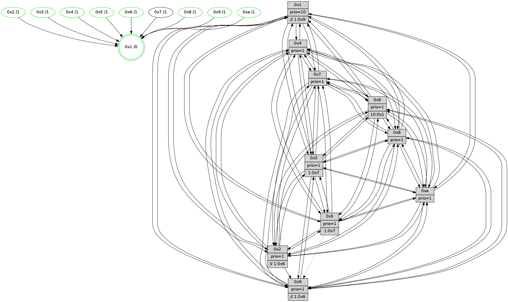

>> << IDX [start] -100 -25 -5 +0 +5 +25 +100 [725.509091139]
 Previous packets
720.002160 beacon02(faad) #0 coord=01,02,03,04,05,06,07,0a,09,08 cycle=688.0ms assoc 64 cc 52
720.012161 beacon03(faad) #0 coord=01,02,03,04,05,06,07,0a,09,08 cycle=688.0ms assoc 64 b6 1f
720.022159 beacon04(faad) #0 coord=01,02,03,04,05,06,07,0a,09,08 cycle=688.0ms assoc 64 c1 f5
720.032163 beacon05(faad) #0 coord=01,02,03,04,05,06,07,0a,09,08 cycle=688.0ms assoc 64 bb b8
720.042161 beacon06(faad) #0 coord=01,02,03,04,05,06,07,0a,09,08 cycle=688.0ms assoc 64 35 6f
720.052161 beacon07(faad) #0 coord=01,02,03,04,05,06,07,0a,09,08 cycle=688.0ms assoc 64 4f 22
720.062166 beacon0a(faad) #0 coord=01,02,03,04,05,06,07,0a,09,08 cycle=688.0ms assoc 64 3e 29
720.072165 beacon09(faad) #0 coord=01,02,03,04,05,06,07,0a,09,08 cycle=688.0ms assoc 64 b0 fe
720.082165 beacon08(faad) #0 coord=01,02,03,04,05,06,07,0a,09,08 cycle=688.0ms assoc 64 ca b3
720.097879 [Hello(8): seq=405 sym=5,2,3,4,7,6,9,10,1 sysInfo=hasWarning stat=5:1,11,9,8/2:11,1,15,2/3:6,7,4,9/4:14,2,6,6/7:7,4,7,6/6:2,7,4,8/9:10,1,8,5/10:8,12,9,6/1:10,5,9,0]
720.100312 [Hello(2): seq=458 sym=4,5,7,6,3,9,8,10,1 sysInfo=hasWarning stat=4:14,13,4,4/5:2,5,5,1/7:1,0,9,4/6:2,6,7,6/3:3,13,2,3/9:12,0,0,1/8:14,12,0,5/10:5,1,3,5/1:6,0,4,1]
720.103030 [Color(8) seq=128 @0:0 prio=1]
720.104884 [Hello(9): seq=405 sym=5,3,4,7,6,8,10,1 sysInfo=hasWarning stat=5:3,11,3,9/3:4,12,2,8/4:7,5,3,5/7:10,10,9,4/6:4,13,5,6/8:14,12,12,3/10:10,6,8,8/1:5,0,11,1]
720.107967 [Hello(10): seq=394 sym=6,2,3,8,9,5,7,4,1 sysInfo=hasWarning stat=6:12,6,9,3/2:6,3,14,1/3:15,6,14,5/8:12,5,4,7/9:10,2,1,4/5:7,9,3,9/7:9,6,5,3/4:7,3,13,6/1:7,6,12,1]
720.111777 [Hello(5): seq=462 sym=7,6,4,3,1,9,8,10,2 sysInfo=hasWarning stat=7:7,5,8,4/6:6,3,7,7/4:2,10,15,5/3:9,10,1,6/1:7,3,9,1/9:2,8,0,0/8:9,7,0,5/10:0,11,7,6/2:7,2,2,0]
720.114631 [Color(6) seq=115 @0:0 prio=1]
720.116977 [Color(5) seq=115 @0:0 prio=1 >1.@6,1.@7,1.@9,1.@a]
720.119396 [Color(10) seq=93 @0:0 prio=1]
720.126088 [Color(2) seq=107 @0:0 prio=1 >>1.@6,1.@7,1.@9]
720.129574 [Color(9) seq=110 @0:0 prio=1 >>1.@6,1.@7,1.@9]
----------------------------------------------------------------------
720.780308 beacon01(faad) #0 coord=01,02,03,04,05,06,07,0a,09,08 cycle=688.0ms assoc
-- color-indic=1 64 6b 7b
720.790290 beacon02(faad) #0 coord=01,02,03,04,05,06,07,0a,09,08 cycle=688.0ms assoc 64 f8 4a
720.800292 beacon03(faad) #0 coord=01,02,03,04,05,06,07,0a,09,08 cycle=688.0ms assoc 64 82 07
720.810292 beacon04(faad) #0 coord=01,02,03,04,05,06,07,0a,09,08 cycle=688.0ms assoc 64 f5 ed
720.820292 beacon05(faad) #0 coord=01,02,03,04,05,06,07,0a,09,08 cycle=688.0ms assoc 64 8f a0
720.830291 beacon06(faad) #0 coord=01,02,03,04,05,06,07,0a,09,08 cycle=688.0ms assoc 64 01 77
720.840292 beacon07(faad) #0 coord=01,02,03,04,05,06,07,0a,09,08 cycle=688.0ms assoc 64 7b 3a
720.850298 beacon0a(faad) #0 coord=01,02,03,04,05,06,07,0a,09,08 cycle=688.0ms assoc 64 0a 31
720.860297 beacon09(faad) #0 coord=01,02,03,04,05,06,07,0a,09,08 cycle=688.0ms assoc 64 84 e6
720.870297 beacon08(faad) #0 coord=01,02,03,04,05,06,07,0a,09,08 cycle=688.0ms assoc 64 fe ab
720.885118 [Hello(4): seq=462 sym=5,7,6,2,3,9,8,10,1 sysInfo= stat=5:9,1,7,8/7:14,10,7,2/6:3,11,10,8/2:14,4,4,8/3:11,12,0,5/9:8,11,5,3/8:13,13,8,8/10:6,11,10,7/1:1,12,8,1]
720.887873 [Hello(6): seq=462 sym=2,3,5,4,7,9,8,10,1 sysInfo= stat=2:10,15,14,7/3:1,3,7,7/5:3,13,8,10/4:5,4,6,0/7:12,11,3,1/9:6,15,7,6/8:3,0,9,6/10:10,9,0,7/1:0,0,5,1]
720.894765 [Hello(1): seq=371 sym=4,2,9,5,10,3,8,6,7 sysInfo=coloring-mode-on,ColoringModeRequestCalled stat=4:6,1,6,0/2:2,15,12,9/9:5,5,6,0/5:2,12,8,1/10:12,0,13,8/3:7,14,4,11/8:10,0,1,7/6:6,14,15,7/7:7,5,3,8]
----------------------------------------------------------------------
721.568440 beacon01(faad) #0 coord=01,02,03,04,05,06,07,0a,09,08 cycle=688.0ms assoc
-- color-indic=1 64 d7 7e
721.578422 beacon02(faad) #0 coord=01,02,03,04,05,06,07,0a,09,08 cycle=688.0ms assoc 64 44 4f
721.588421 beacon03(faad) #0 coord=01,02,03,04,05,06,07,0a,09,08 cycle=688.0ms assoc 64 3e 02
721.598423 beacon04(faad) #0 coord=01,02,03,04,05,06,07,0a,09,08 cycle=688.0ms assoc 64 49 e8
721.608422 beacon05(faad) #0 coord=01,02,03,04,05,06,07,0a,09,08 cycle=688.0ms assoc 64 33 a5
721.618423 beacon06(faad) #0 coord=01,02,03,04,05,06,07,0a,09,08 cycle=688.0ms assoc 64 bd 72
721.628424 beacon07(faad) #0 coord=01,02,03,04,05,06,07,0a,09,08 cycle=688.0ms assoc 64 c7 3f
721.638427 beacon0a(faad) #0 coord=01,02,03,04,05,06,07,0a,09,08 cycle=688.0ms assoc 64 b6 34
721.648428 beacon09(faad) #0 coord=01,02,03,04,05,06,07,0a,09,08 cycle=688.0ms assoc 64 38 e3
721.658430 beacon08(faad) #0 coord=01,02,03,04,05,06,07,0a,09,08 cycle=688.0ms assoc 64 42 ae
721.672936 [Hello(10): seq=395 sym=6,2,3,8,9,5,7,4,1 sysInfo=hasWarning stat=6:13,6,9,3/2:6,4,14,1/3:15,6,14,5/8:12,5,4,7/9:10,3,1,4/5:7,9,3,9/7:10,6,5,3/4:8,3,13,6/1:8,6,12,1]
721.675700 [Hello(8): seq=406 sym=5,2,3,4,7,6,9,10,1 sysInfo=hasWarning stat=5:2,12,9,8/2:12,2,15,2/3:6,7,4,9/4:15,2,6,6/7:8,4,7,6/6:3,8,4,8/9:11,2,8,5/10:9,13,9,6/1:11,5,9,0]
721.678509 [Color(8) seq=129 @0:0 prio=1]
721.680000 [Hello(5): seq=463 sym=7,6,4,3,1,9,8,10,2 sysInfo=hasWarning stat=7:8,5,8,4/6:7,3,7,7/4:3,10,15,5/3:9,10,1,6/1:8,3,9,1/9:2,9,0,0/8:9,7,0,5/10:0,12,7,6/2:7,3,2,0]
721.682519 [Color(7) seq=104 @0:0 prio=1]
721.683774 [Color(5) seq=116 @0:0 prio=1 >1.@6,1.@7,1.@9,1.@a]
721.686165 [Hello(9): seq=406 sym=3,4,7,6,8,10,1 sysInfo=hasWarning stat=3:5,13,2,8/4:8,5,3,5/7:10,10,9,4/6:5,13,5,6/8:14,12,12,3/10:10,6,8,8/1:6,0,11,1]
721.688732 [Hello(2): seq=459 sym=4,5,7,6,3,9,8,10,1 sysInfo=hasWarning stat=4:15,13,4,4/5:2,5,5,1/7:2,1,9,4/6:3,6,7,6/3:3,13,2,3/9:12,1,0,1/8:14,12,0,5/10:5,1,3,5/1:7,0,4,1]
721.691830 [Color(6) seq=116 @0:0 prio=1]
721.693424 [Color(2) seq=108 @0:0 prio=1 >>1.@6,1.@7,1.@9]
721.696011 [Color(10) seq=94 @0:0 prio=1]
721.699669 [Color(1) seq=143 @0:0 prio=10 >>1.@7,1.@9,1.@a]
721.703405 [Color(9) seq=111 @0:0 prio=1 >>1.@6,1.@7,1.@9]
721.713008 [Color(4) seq=92 @0:0 prio=1]
----------------------------------------------------------------------
722.356571 beacon01(faad) #0 coord=01,02,03,04,05,06,07,0a,09,08 cycle=688.0ms assoc
-- color-indic=1 64 13 70
722.366554 beacon02(faad) #0 coord=01,02,03,04,05,06,07,0a,09,08 cycle=688.0ms assoc 64 80 41
722.376555 beacon03(faad) #0 coord=01,02,03,04,05,06,07,0a,09,08 cycle=688.0ms assoc 64 fa 0c
722.386554 beacon04(faad) #0 coord=01,02,03,04,05,06,07,0a,09,08 cycle=688.0ms assoc 64 8d e6
722.396555 beacon05(faad) #0 coord=01,02,03,04,05,06,07,0a,09,08 cycle=688.0ms assoc 64 f7 ab
722.406554 beacon06(faad) #0 coord=01,02,03,04,05,06,07,0a,09,08 cycle=688.0ms assoc 64 79 7c
722.416554 beacon07(faad) #0 coord=01,02,03,04,05,06,07,0a,09,08 cycle=688.0ms assoc 64 03 31
722.426558 beacon0a(faad) #0 coord=01,02,03,04,05,06,07,0a,09,08 cycle=688.0ms assoc 64 72 3a
722.436559 beacon09(faad) #0 coord=01,02,03,04,05,06,07,0a,09,08 cycle=688.0ms assoc 64 fc ed
722.446561 beacon08(faad) #0 coord=01,02,03,04,05,06,07,0a,09,08 cycle=688.0ms assoc 64 86 a0
722.458101 [Hello(3): seq=463 sym=1,7,6,2,4,8,9,10,5 sysInfo= stat=1:10,3,9,1/7:12,9,4,2/6:14,11,0,8/2:1,9,5,8/4:9,1,4,5/8:11,7,6,3/9:14,2,10,6/10:3,11,8,6/5:10,8,6,7]
722.461881 [Hello(7): seq=463 sym=2,3,5,6,4,8,9,10,1 sysInfo=hasWarning stat=2:15,11,12,9/3:0,1,9,9/5:13,14,11,12/6:6,12,8,3/4:12,10,3,0/8:7,7,11,5/9:4,8,10,8/10:12,7,12,8/1:10,10,7,1]
722.465398 [Hello(6): seq=463 sym=2,3,5,4,7,9,8,10,1 sysInfo= stat=2:10,0,14,7/3:1,3,7,7/5:3,13,8,10/4:5,5,6,0/7:12,11,3,1/9:6,0,7,6/8:3,0,9,6/10:10,10,0,7/1:1,1,5,1]
722.472722 [Hello(1): seq=372 sym=4,2,9,5,10,3,8,6,7 sysInfo=coloring-mode-on,ColoringModeRequestCalled stat=4:6,2,6,0/2:2,15,12,9/9:5,6,6,0/5:2,12,8,1/10:12,0,13,8/3:7,14,4,11/8:10,0,1,7/6:6,14,15,7/7:7,5,3,8]
722.476489 [STC(1) #0.68 tree-change,inconsistent-stability,stable,to-color d=0]
----------------------------------------------------------------------
723.144702 beacon01(faad) #0 coord=01,02,03,04,05,06,07,0a,09,08 cycle=688.0ms assoc
-- color-indic=1 64 af 75
723.154685 beacon02(faad) #0 coord=01,02,03,04,05,06,07,0a,09,08 cycle=688.0ms assoc 64 3c 44
723.164683 beacon03(faad) #0 coord=01,02,03,04,05,06,07,0a,09,08 cycle=688.0ms assoc 64 46 09
723.174685 beacon04(faad) #0 coord=01,02,03,04,05,06,07,0a,09,08 cycle=688.0ms assoc 64 31 e3
723.184686 beacon05(faad) #0 coord=01,02,03,04,05,06,07,0a,09,08 cycle=688.0ms assoc 64 4b ae
723.194685 beacon06(faad) #0 coord=01,02,03,04,05,06,07,0a,09,08 cycle=688.0ms assoc 64 c5 79
723.204686 beacon07(faad) #0 coord=01,02,03,04,05,06,07,0a,09,08 cycle=688.0ms assoc 64 bf 34
723.214690 beacon0a(faad) #0 coord=01,02,03,04,05,06,07,0a,09,08 cycle=688.0ms assoc 64 ce 3f
723.224702 beacon09(faad) #0 coord=01,02,03,04,05,06,07,0a,09,08 cycle=688.0ms assoc 64 40 e8
723.234689 beacon08(faad) #0 coord=01,02,03,04,05,06,07,0a,09,08 cycle=688.0ms assoc 64 3a a5
723.246562 [STC(7)->1 #0.68 to-color d=1]
723.249427 [STC(6)->1 #0.68 tree-change,inconsistent-stability,stable,to-color d=1]
723.250828 [Hello(10): seq=396 sym=6,2,3,8,9,5,7,4,1 sysInfo=hasWarning stat=6:14,6,9,3/2:6,4,14,1/3:0,6,14,5/8:12,5,4,7/9:10,4,1,4/5:7,9,3,9/7:11,6,5,3/4:8,4,13,6/1:9,7,13,1]
723.253901 [Hello(9): seq=407 sym=3,4,7,6,8,10,1 sysInfo=hasWarning stat=3:5,13,2,8/4:9,6,3,5/7:11,10,9,4/6:6,13,5,6/8:14,12,12,3/10:10,6,8,8/1:7,0,12,1]
723.256408 [Hello(5): seq=464 sym=7,6,4,3,1,9,8,10,2 sysInfo=hasWarning stat=7:9,5,8,4/6:8,4,7,7/4:4,11,15,5/3:9,10,1,6/1:9,4,10,1/9:3,10,0,0/8:9,7,0,5/10:0,13,7,6/2:8,4,2,0]
723.259745 [STC(4)->1 #0.68 tree-change,inconsistent-stability,stable,to-color d=1]
723.261110 [STC(10)->1 #0.68 tree-change,inconsistent-stability,stable,to-color d=1]
723.262481 [Hello(8): seq=407 sym=5,2,3,4,7,6,9,10,1 sysInfo=hasWarning stat=5:3,13,9,8/2:13,3,15,2/3:7,7,4,9/4:15,3,6,6/7:9,5,7,6/6:4,9,4,8/9:12,3,8,5/10:9,14,9,6/1:12,6,10,0]
723.264928 [STC(3)->1 #0.68 tree-change,inconsistent-stability,stable,to-color d=1]
723.267373 [Color(10) seq=95 @0:0 prio=1]
723.268922 [STC(5)->1 #0.68 tree-change,inconsistent-stability,stable,to-color d=1]
723.270361 [STC(8)->1 #0.68 tree-change,inconsistent-stability,stable,to-color d=1]
723.271646 [Color(3) seq=115 @0:0 prio=1 >1.@7,1.@8,1.@9,1.@a]
723.273732 [Color(8) seq=130 @0:0 prio=1]
723.274984 [Color(1) seq=144 @0:0 prio=10 >>1.@7,1.@9,1.@a]
723.278203 [Color(5) seq=117 @0:0 prio=1 >1.@7,1.@9,1.@a]
723.280887 [Hello(2): seq=460 sym=4,5,7,6,3,9,8,10,1 sysInfo=hasWarning stat=4:0,14,4,4/5:2,5,5,1/7:3,1,9,4/6:4,6,7,6/3:3,13,2,3/9:12,2,0,1/8:14,12,0,5/10:6,2,3,5/1:8,1,5,1]
723.283467 [STC(9)->1 #0.68 tree-change,inconsistent-stability,stable,to-color d=1]
723.285443 [Color(9) seq=112 @0:0 prio=1 >>1.@6,1.@7,1.@9]
723.287042 [STC(2)->1 #0.68 tree-change,inconsistent-stability,stable,to-color d=1]
723.289324 [Color(2) seq=109 @0:0 prio=1 >>1.@6,1.@7,1.@9]
723.291390 [Color(4) seq=93 @0:0 prio=1]
----------------------------------------------------------------------
723.932831 beacon01(faad) #0 coord=01,02,03,04,05,06,07,0a,09,08 cycle=688.0ms assoc
-- color-indic=1 64 7b 40
723.942814 beacon02(faad) #0 coord=01,02,03,04,05,06,07,0a,09,08 cycle=688.0ms assoc 64 e8 71
723.952814 beacon03(faad) #0 coord=01,02,03,04,05,06,07,0a,09,08 cycle=688.0ms assoc 64 92 3c
723.962816 beacon04(faad) #0 coord=01,02,03,04,05,06,07,0a,09,08 cycle=688.0ms assoc 64 e5 d6
723.972814 beacon05(faad) #0 coord=01,02,03,04,05,06,07,0a,09,08 cycle=688.0ms assoc 64 9f 9b
723.982814 beacon06(faad) #0 coord=01,02,03,04,05,06,07,0a,09,08 cycle=688.0ms assoc 64 11 4c
723.992815 beacon07(faad) #0 coord=01,02,03,04,05,06,07,0a,09,08 cycle=688.0ms assoc 64 6b 01
724.002818 beacon0a(faad) #0 coord=01,02,03,04,05,06,07,0a,09,08 cycle=688.0ms assoc 64 1a 0a
724.012818 beacon09(faad) #0 coord=01,02,03,04,05,06,07,0a,09,08 cycle=688.0ms assoc 64 94 dd
724.022820 beacon08(faad) #0 coord=01,02,03,04,05,06,07,0a,09,08 cycle=688.0ms assoc 64 ee 90
724.033752 [Hello(1): seq=373 sym=4,2,9,5,10,3,8,6,7 sysInfo=coloring-mode-on,ColoringModeRequestCalled stat=4:6,3,6,0/2:3,0,13,9/9:5,7,7,0/5:2,13,8,1/10:12,0,13,8/3:7,14,4,11/8:10,0,1,7/6:6,14,15,7/7:7,5,4,8]
724.037669 [Hello(4): seq=464 sym=5,7,6,2,3,9,8,10,1 sysInfo= stat=5:9,1,7,8/7:15,10,8,2/6:5,11,10,8/2:14,4,4,8/3:11,12,0,5/9:8,11,5,3/8:13,13,8,8/10:6,11,10,7/1:3,12,9,1]
724.040691 PARSE ERROR************************
Traceback (most recent call last):
File "PacketAnalysis.py", line 167, in showOperaPacket
structPacket = OperaPacketParse.parsePacket(rawPacket)
File "../../pkg-python/HipSens/Core/OperaPacketParse.py", line 461, in parsePacket
return parseHelloMessage(data)
File "../../pkg-python/HipSens/Core/OperaPacketParse.py", line 127, in parseHelloMessage
assert struct.calcsize("H")*len(neighAddrList) == len(linkList)
AssertionError
48 34 06 00 01 d0 00 02 02 12 02 00 03 00 05 00 04 00 07 00 09 00 08 00 0a 00 01 00 53 04 00 00 00 00 4c 12 7f 1b 77 31 a8 e3 06 65 14 bc 68 16 69 13 70 aa 16 22 4c ae
724.044166 [Hello(7): seq=464 sym=2,3,5,6,4,8,9,10,1 sysInfo=hasWarning stat=2:0,12,13,9/3:0,1,9,9/5:14,15,12,12/6:7,13,9,3/4:12,11,4,0/8:8,8,12,5/9:5,9,11,8/10:13,8,13,8/1:11,11,8,1]
724.049153 [Hello(3): seq=464 sym=1,7,6,2,4,8,9,10,5 sysInfo= stat=1:11,4,10,1/7:13,9,5,2/6:15,11,0,8/2:2,10,6,8/4:9,2,4,5/8:11,8,6,3/9:14,3,11,6/10:3,11,8,6/5:10,9,6,7]
----------------------------------------------------------------------
724.720961 beacon01(faad) #0 coord=01,02,03,04,05,06,07,0a,09,08 cycle=688.0ms assoc
-- color-indic=1 64 c7 45
724.730943 beacon02(faad) #0 coord=01,02,03,04,05,06,07,0a,09,08 cycle=688.0ms assoc 64 54 74
724.740944 beacon03(faad) #0 coord=01,02,03,04,05,06,07,0a,09,08 cycle=688.0ms assoc 64 2e 39
724.750943 beacon04(faad) #0 coord=01,02,03,04,05,06,07,0a,09,08 cycle=688.0ms assoc 64 59 d3
724.760943 beacon05(faad) #0 coord=01,02,03,04,05,06,07,0a,09,08 cycle=688.0ms assoc 64 23 9e
724.770945 beacon06(faad) #0 coord=01,02,03,04,05,06,07,0a,09,08 cycle=688.0ms assoc 64 ad 49
724.780944 beacon07(faad) #0 coord=01,02,03,04,05,06,07,0a,09,08 cycle=688.0ms assoc 64 d7 04
724.790950 beacon0a(faad) #0 coord=01,02,03,04,05,06,07,0a,09,08 cycle=688.0ms assoc 64 a6 0f
724.800950 beacon09(faad) #0 coord=01,02,03,04,05,06,07,0a,09,08 cycle=688.0ms assoc 64 28 d8
724.810949 beacon08(faad) #0 coord=01,02,03,04,05,06,07,0a,09,08 cycle=688.0ms assoc 64 52 95
724.825676 [Color(4) seq=94 @0:0 prio=1]
724.827127 [Hello(9): seq=408 sym=3,4,7,6,8,10,1 sysInfo=hasWarning stat=3:6,13,2,8/4:10,7,3,5/7:12,10,10,4/6:7,13,6,6/8:14,12,12,3/10:10,6,8,8/1:8,0,12,1]
724.829870 [Hello(10): seq=397 sym=6,2,3,8,9,5,7,4,1 sysInfo=hasWarning stat=6:15,7,9,3/2:7,5,15,1/3:1,6,14,5/8:12,6,5,7/9:10,5,2,4/5:7,10,4,9/7:12,6,6,3/4:9,5,13,6/1:10,8,13,1]
724.832709 [Color(6) seq=118 @0:0 prio=1 >10.@1,1.@7,1.@8,1.@9]
724.835853 [Hello(2): seq=461 sym=4,5,7,6,3,9,8,10,1 sysInfo=hasWarning stat=4:1,15,4,4/5:2,5,5,1/7:4,1,10,4/6:5,6,8,6/3:4,13,2,3/9:12,2,0,1/8:14,12,0,5/10:6,2,3,5/1:9,1,5,1]
724.838403 [Color(10) seq=96 @0:0 prio=1]
724.840279 [Hello(5): seq=465 sym=7,6,4,3,1,8,10,2 asym=9 sysInfo=hasWarning stat=7:10,5,9,4/6:9,4,8,7/4:5,12,15,5/3:10,10,1,6/1:10,4,10,1/8:9,7,0,5/10:0,13,7,6/2:9,5,3,0/9:3,11,1,0]
724.845407 [Color(5) seq=118 @0:0 prio=1 >1.@7,1.@9,1.@a]
724.847259 [Color(2) seq=110 @0:0 prio=1 >>1.@6,1.@7,1.@9]
724.849645 [Color(1) seq=145 @0:0 prio=10 >>1.@9,1.@a]
724.851772 [Hello(8): seq=408 sym=5,2,3,4,7,6,9,10,1 sysInfo=hasWarning stat=5:3,14,9,8/2:14,4,0,2/3:8,7,5,9/4:0,4,6,6/7:10,5,8,6/6:5,9,4,8/9:12,4,9,5/10:9,14,9,6/1:13,7,10,0]
724.854967 [Color(3) seq=116 @0:0 prio=1 >1.@7,1.@8,1.@9,1.@a]